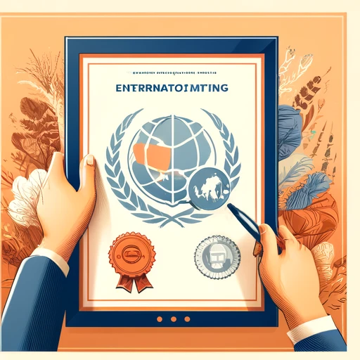
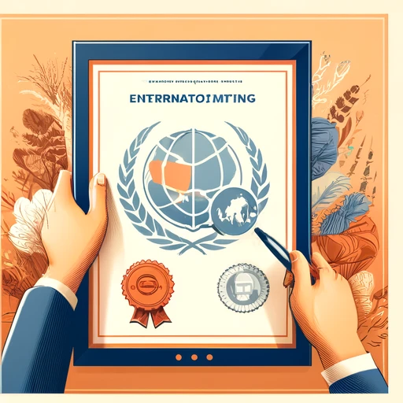

Jiale Lin
I am a seasoned international business professional with extensive experience in global market analysis, strategic planning, and supply chain management. Graduating with a degree in International Business from the University of California, Riverside (UCR), I have developed a comprehensive understanding of global business dynamics, cross-cultural communication, and international trade regulations.
Currently, I serve as an International Business Development Manager at XYZ Corporation. In this role, I lead initiatives to expand our market presence across various regions, identifying and capitalizing on new business opportunities. I forge strategic partnerships and navigate the intricacies of international trade compliance. Through my efforts, I have successfully increased our company's market share and facilitated entry into emerging markets.
Prior to my current position, I worked as a Market Analyst at ABC Enterprises. My responsibilities included conducting extensive market research and competitive analysis to support our international sales strategies. I developed market entry plans and optimized supply chain logistics, enhancing efficiency and reducing costs. My analytical skills and strategic insights played a crucial role in driving our international expansion efforts.
My career began as a Logistics Coordinator at DEF Global, where I managed the logistics of international shipments and coordinated with various stakeholders to ensure timely delivery. I negotiated with freight forwarders, optimized shipping routes, and managed customs compliance. My efforts led to significant improvements in delivery times and cost savings.
At UCR, I graduated with honors and actively participated in various extracurricular activities that enriched my academic experience. I was a member of the International Business Association, where I collaborated with peers on projects addressing real-world business challenges. This involvement helped me hone my leadership and teamwork skills.
To stay at the forefront of my field, I have obtained the Certified Global Business Professional (CGBP) designation and completed advanced courses in international finance, global marketing, and trade regulations. My commitment to continuous learning ensures that I remain well-versed in the latest industry trends and best practices, enabling me to provide innovative solutions to complex business problems.
Beyond my professional endeavors, I am passionate about cultural exchange and community service. I volunteer with organizations that promote international education and economic development, sharing my expertise to help others succeed. In my free time, I enjoy traveling, exploring new cultures, and networking with professionals from diverse backgrounds.
My career objective is to leverage my international business acumen to contribute to a forward-thinking organization that values diversity, innovation, and growth. I am eager to embrace new challenges and make a meaningful impact on the global stage.
Experience
International Business Development Manager
• Lead initiatives to expand market presence across various regions
• Identify and capitalize on new business opportunities
• Forge strategic partnerships and navigate international trade compliance
• Successfully increased company market share and facilitated entry into emerging markets
Market Analyst
• Conducted extensive market research and competitive analysis
• Developed market entry plans and optimized supply chain logistics
• Enhanced efficiency and reduced costs
• Played a crucial role in driving international expansion efforts
Logistics Coordinator
• Managed logistics of international shipments
• Coordinated with stakeholders to ensure timely delivery
• Negotiated with freight forwarders and optimized shipping routes
• Managed customs compliance, leading to significant improvements in delivery times and cost savings
Education
University of California, Riverside
University of California, Riverside
Portfolio


